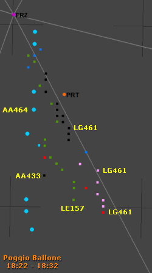
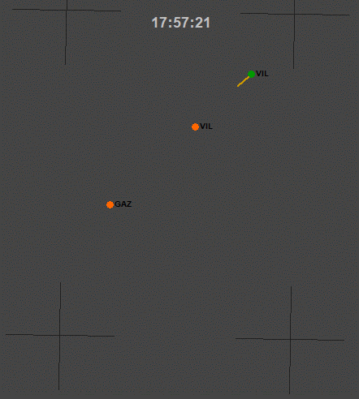
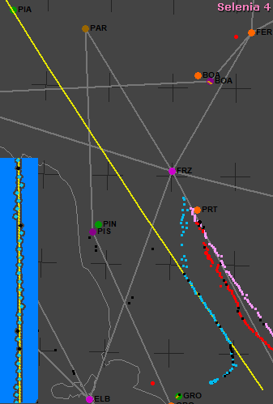
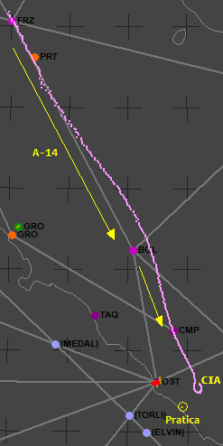
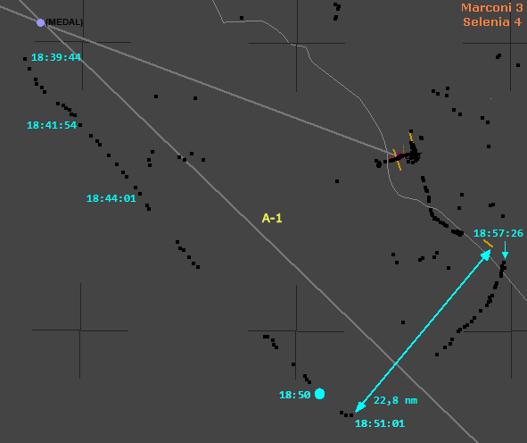

Fasi del volo - Affiancamento con il caccia
INDICE
Sfasamento temporale tra Ciampino e Poggio Ballone
La "Perizia tecnico scientifica Misiti; parte radaristica 2a" riporta a pag. 9: "converrà precisare che il ritardo del clock fra Poggio Ballone e Marsala di circa 3'50" (es.21h.
a Marsala 21h03'50" Poggio Ballone) (da video cassetta AM). Questo ritardo è stato avvalorato dall'analisi sulle registrazioni." e a fine pag. 12: "[...] è possibile desumere un ritardo di circa 1 min. per il radar di Marsala rispetto al Marconi", quindi la differenza tra Poggio Ballone e Marconi è di circa 2m50s. Tuttavia, confrontando accuratamente la posizione dei plot nel tabulato del Marconi e di Poggio Ballone si ottiene una differenza di 2m43s, comunque molto simile a quella indicata nella perizia.
Siccome non è possibile sapere quale radar riporta i plot con l'orario esatto, tutte le cartine che mostrano i plot ottenuti dal tabulato di Poggio Ballone hanno l'orario "risincronizzato" con quello di Ciampino, ottenuto sottraendo quei 2m43s al tabulato di Poggio Ballone.
Assenza di plot per 3m34s
Appare utile mettere in evidenza che il tabulato di Poggio Ballone non riporta alcun plot dalle 18:30:19 alle 18:33:52 (3m34s); orari che, sincronizzati con Ciampino, corrispondono rispettivamente alle 18:27:35 e alle 18:31:10. Osservando la cartina di Poggio Ballone nel paragrafo "Descrizione degli eventi" (v. oltre), è ben evidente a cosa corrisponde questo "buco" temporale.
Considerando che tutti gli altri plot sono riportati nel tabulato di Poggio Ballone con una distanza temporale massima di 7 secondi (la media è 0,87 s tra due plot consecutivi), è evidente che quel vuoto di 214 secondi è estremamente "strano" (per usare un eufemismo).
Ugualmente "strano" è l'orario centrale di quel vuoto temporale: 18:29:23 (orario di Ciampino). Muovendo il puntatore del mouse sulla cartina "Marconi 3" più sotto, vediamo che quel plot rosso tutto spostato verso il caccia è delle 18:29:11, molto vicino, quindi, all'orario centrale del "buco".
Il cap. Pongiluppi, all'epoca comandante dell'Ufficio Operazioni del sito radar di Poggio Ballone, riferisce
(v. "
WP000877_001.DOC"
fonte a circa metà pag. 2):
NON HO NOTATO NELLA RIDUZIONE DATI ALCUN BUCO DI ORARIO; SE LI AVESSI
NOTATI, MI SAREI CHIESTO IL PERCHE' E LO AVREI CHIESTO ALL'UFFICIALE TECNICO E
AL M.I.O., GIACCHE' SE C'E' MANCATA RIDUZIONE C'E' MANCATA REGISTRAZIONE. SE SI
EFFETTUA LA RIDUZIONE DATI IL PROGRAMMA NON REGISTRA. NON HO NOTATO BUCHI DI
ORARIO NELLA RIDUZIONE DATI DEL 27.06.80.
PRENDO VISIONE DELLA TRACK HISTORY DEL 27.06.80 ED IN RELAZIONE AL BUCO DI
ORARIO TRA LE 18,30,180/Z E LE 18,33,535/Z NON RICORDO DI AVERLO NOTATO NE'
QUANDO HO EFFETTUATO LA TRASPOSIZIONE SU CARTINA NEL 1980 NE' QUANDO MI E' STATO
ORDINATO DALL'UFFICIO DA CUI DIPENDEVO NEL 1990, CIOE' L'ITAV. IL BUCO ORARIO
PUO' DETERMINARSI O DA UNA INTERRUZIONE DEL RECORDING O DAL MALFUNZIONAMENTO
DELL'APPARATO STESSO O DA UNA SOSTITUZIONE DEL NASTRO.
La riduzione dati consisteva nello stampare su carta ciò che una postazione radar registrava su nastro.
I dati registrati erano composti da due tabulati:
- THR, tabulato contenente la posizione e altre informazioni relative alle tracce in un dato orario;
- CDR, tabulato contenente la sequenza delle operazioni effettuate dai radaristi sulla consolle radar (ad esempio, inizializzazione, aggiornamento e cancellazione di una traccia).
Ciò che riferisce Pongiluppi, dunque, è che mentre scorre i vari plot della THR e li riporta sulla cartina, non nota alcun "buco di orario".

L'immagine mostra i plot relativi a varie tracce intorno all'IH870, riportata come LE157. L'attenzione di Pongiluppi, quindi, era quasi esclusivamente rivolta alla traccia LE157.
Il tabulato consegnato all'
A.G. mostra un aereo di linea (l'IH870) sparire improvvisamente (inizio del buco temporale).
Se Pongiluppi avesse usato la stessa riduzione dati consegnata all'A.G. (con il buco temporale), risulta impossibile pensare che non si sarebbe accorto dell'improvvisa ed ingiustificabile scomparsa della traccia esaminata. Molto verosimilmente, accortosi di una tale stranezza, avrebbe esaminato anche altre traccie, arrivando certamente ad accorgersi che mancavano più di tre minuti di registrazione.
Appare probabile, quindi, che la riduzione dati sia stata consegnata incompleta all'A.G.
Nonostante il fatto che l'A.G. ritenga che il teste abbia "reso dichiarazioni palesemente reticenti" (v. "WP002066_001.DOC" fonte inizio pag. 1), il maresciallo Stasio dichiara molto apertamente (v. pag. 3):
NOTO CHE ESISTE UN "SALTO" NELLA REGISTRAZIONE TRA LE ORE 18,30,180 E LE ORE
18,33,535 SENZA CHE SULLA RIDUZIONE DATI COMPAIA ALCUN DIAGNOSTICO; PER
DIAGNOSTICO INTENDO UN MESSAGGIO CHE DICE CHE IN QUEL TRATTO IL NASTRO ABBIA
TROVATO DIFFICOLTA' O NON RIESCE A LEGGERE NULLA, CIOE' NON E' ASSOLUTAMENTE NORMALE: AD ESEMPIO POTREBBE ESSERCI STATO UN MESSAGGIO TIPO "ZERO LENGHT
RECORD". ANCHE NELL'IPOTESI CHE CI SIA UN CALO DI TENSIONE CHE DETERMINEREBBE UN
FERMO DEL SISTEMA CI SAREBBE COMUNQUE UN DIAGNOSTICO.
Se a questo si aggiunge il risultato ottenuto dall'analisi statistica presentata a fine pagina "Presenza del MiG-23" → "Analisi plot consecutivi Poggio Ballone", non può esserci alcun dubbio sull'intenzionalità di far scomparire quelle righe dai tabulati.
Traffico a Villafranca
Il tabulato radar di Poggio Ballone mostra fin dalle primissime righe uno strano traffico militare con SIF2 = 7777.

Quest'animazione (molto velocizzata) mostra un aereo militare che arriva da sud-est a velocità sostenuta (circa 500 kn rispetto al suolo) e si dirige inizialmente verso il radiofaro di Gazoldo. Poi sembra andare verso l'aeroporto di Villafranca arrivando fino all'altro radiofaro per poi ritornare su Gazoldo.
Se la velocità non fosse sempre così elevata, potrebbe sembrare una sorta d'addestramento, ma il particolare codice di modo 2 pari a 7777 (plot a forma di cerchio) e l'elevata velocità rendono inverosimile l'ipotesi di un volo d'addestramento.
Dopo qualche minuto d'assenza di plot, inizia la traccia LE011 (quadratini verdi) che nel tabulato di Poggio Ballone si presenta senza alcun codice SIF (come se l'aereo avesse il transponder in standby). Questa traccia, a prima vista, sembra compatibile con il TF-104G di ritorno dall'addestramento a Villafranca, per orario, direzione e velocità, ma dall'analisi più approfondita presentata nella pagina "
Presenza del MiG-23",
si può escludere con certezza quasi assoluta che la traccia LE011 possa riferirsi ad un TF-104G, anche se questo è in contrasto con la ricostruzione fatta dai periti d'ufficio (v. "
Perizia radaristica Dalle Mese ed altri - 16.06.97" a fine pag. 10).
La scala è rappresentata dalle crocette 10 x 10 nm (miglia nautiche) disegnate ogni 0,5° in longitudine e in latitudine.
La distanza tra il radiofaro di Gazoldo e il TACAN di Villafranca (dischetto verde) è 17,8 nm o 33 km.
Descrizione degli eventi
Le due cartine seguenti mostrano i percorsi di alcuni aerei ricavati dai tabulati radar di Ciampino e di Poggio Ballone.
La scala delle cartine è rappresentata dalle crocette 10 x 10 nm disegnate ogni 0,5° in longitudine e in latitudine. I cerchi relativi a VORTAC, VOR/DME, NDB e TACAN rappresentano le
radioassistenze (il segmento Villafranca - Bologna non rappresenta un'aerovia; è indicato solo come "guida" per la traccia LE011).
L'etichetta informativa che compare posizionando il puntatore del mouse sopra ai plot mostra:
- per Ciampino: orario UTC (o zulu), codice impostato nel transponder (1133: IH779, 1136: IH870, 4200 e 5400: aereo militare), livello di volo, radar che ha ricevuto il plot (SSR: radar secondario, PR: radar primario, SPI: l'aereo si sta identificando su richiesta del controllore), livello del segnale (da 0 a 15), latitudine, longitudine, distanza e azimut dal radar Marconi;
- per Poggio Ballone: orario UTC (risincronizzato con Ciampino), TKN, velocità (nodi), direzione, SIF1, SIF2, SIF3 e qualità del segnale (7 è il massimo).
I plot di dimensioni maggiorate sono quelli con "SPI" per Ciampino e con SIF2 = 7777 per Poggio Ballone.
I plot di Poggio Ballone sono visualizzati con colore diverso in base all'identificativo TKN. I tre plot con SIF1 = 73 sono di colore rosso.
Le tre aree di colore verde rappresentano le "zone di lavoro" di Gavorrano, Scansano e Siena (nominate da alcuni testi) e sono definite nel documento
"
WP001503_001.DOC"
fonte.
Particolare menzione meritano alcuni plot presenti nel tabulato dell'estrattore 3:
- significativa presenza di plot di solo primario (di colore nero) non associabili a nessuno dei tre aerei noti, in quanto sono già presenti altri plot nello stesso orario che si trovano in posizioni differenti;
- presenza di tre plot (due di primario e uno di primario e secondario) intorno alle 18:29 tra la rotta dell'aereo militare e quella dell'IH870, in sequenza tale da mostrare un aereo che si muove dall'IH870 verso l'aereo militare.
Analizzando i plot presenti nel tabulato di Poggio Ballone con tutti i loro dati e con il giusto spirito critico, prescindendo, quindi, dalla frettolosa ricostruzione fatta dai periti d'ufficio, si può solo affermare che la traccia LE011 (la parte iniziale della traccia ricostruita dai periti) mostra un aereo che proviene da Villafranca e va in direzione di Bologna (notare la particolare rotta basata su NDB) per poi virare verso Firenze.
È da sottolineare che la traccia LE011 non fornisce alcun elemento per poter essere associata con certezza ad uno o due aerei militari, in quanto il tabulato non riporta alcuna risposta ai radar secondari (il transponder sembra tenuto in standby). Si può solo asserire che è associabile ad un jet (data la velocità) che sta facendo qualcosa a bassa velocità nei pressi dell'aeroporto di Villafranca e poi accelera.
Poco prima che la traccia LE011 finisca (tra Bologna e Firenze), inizia la AA464, certamente militare (risponde alle interrogazioni di modo 2 dei radar secondari militari); la prima viaggia intorno ai 450 kn, mentre la seconda sta inizialmente correndo ad oltre 530 kn per poi rallentare, come se dovesse raggiungere LE011 ed entrarci in formazione. Quindi, contrariamente a quanto asserito dai periti, i due aerei inizialmente non volano in formazione.
Intorno alle 18:21, l'IH870 è circa 17 nm più a sud, nei pressi del VORTAC di Firenze, ad una quota troppo bassa per essere rilevato dai radar di Ciampino (sta mantenendo il livello di volo 190, circa 19000 ft), ma abbiamo le comunicazioni TBT fonte.
Anche l'IH779 è nei pressi di Firenze, ma, siccome è decollato da Bergamo, sta provenendo dal VOR di Parma (aerovia UA-14) e sta mantenendo il livello 250.
Una volta passato Firenze, l'aereo militare AA464 si dirige, inizialmente, verso il TACAN di Grosseto (rappresentato dal cerchietto verde), attraversando l’asse dell’aerovia A-14 nel tratto Firenze - Bolsena una trentina di secondi dopo che è passato l’IH779.
Si vede chiaramente che l'aereo militare continua a volare esattamente verso il TACAN di Grosseto per tre minuti e mezzo, poi inizia a volare quasi in parallelo all’A-14.
In questo momento (sono circa le 18:27), i due voli Itavia si trovano a 3 o 4 nm l'uno dall'altro (in allontanamento) e l'IH870 si trova 3500 ft più in basso dell'altro e sta salendo.
Alle 18:27:30 (orario risincronizzato con Ciampino), l'operatore radar di Poggio Ballone cambia la traccia AA464 in LL464 (LL è l'identificativo di Poggio Ballone). Si veda l'esame dell'allora T.P.O. Lauretani da fine pag. 164.
La rotta dell'aereo militare tende ad avvicinarsi lentamente all’asse dell’aerovia, arrivando a circa 8 nm dall'IH870, che serpeggia nel tentativo di seguire la radiale 153 in allontanamento dal VORTAC di Firenze, che ha problemi di funzionamento.
L'aereo militare vola quasi parallelo al DC-9 per tre minuti e mezzo, per un tratto lungo circa 28 nm. Poi vira circa 25 gradi a destra e mantiene la rotta per 1 minuto per poi virare ancora a destra verso Grosseto ed eseguire la procedura d’avvicinamento e l’atterraggio.

La cartina evidenzia che AA464 (plot azzurri) mantiene il tratto quasi parallelo all'A-14 seguendo una prestabilita radiale del TACAN di Piacenza. Si può notare, infatti, che la linea gialla passa quasi esattamente al centro del dischetto verde "PIA" (il TACAN di Piacenza, appunto).
Quella linea gialla forma un angolo pari a 145° con il nord vero o geografico (cioè non magnetico) e rappresenterebbe la radiale seguita da AA464 se il TACAN fosse esattamente allineato al nord vero. Il pilota di AA464, quindi, ha impostato nello strumento sul cruscotto una radiale prestabilita o comunicatagli in volo che potrebbe differire da 145° di qualche grado in più o in meno.
La linea gialla è stata ottenuta facendo ricorso ai preziosi strumenti della
regressione ed
estrapolazione lineare, tramite i quali è possibile calcolare la migliore retta passante per i plot voluti (latitudine e longitudine) ed estendere tale retta (estrapolazione) all'esterno dei plot usati per calcolare la regressione.
Il riquadro su sfondo azzurro è un ingrandimento (ruotato) che evidenzia l'ottimo risultato della regressione (i plot sono vicinissimi alla retta gialla).
Il caccia intercetta la radiale a circa 106 nm dal TACAN e la mantiene fino a circa 134 nm.
Il grafici seguenti possono aiutare a visualizzare la fase del volo quasi in parallelo.

Il grafico mostra la distanza e l’
azimut dell’IH870 rispetto all'aereo militare.
Le due linee rosse verticali rappresentano la fase di volo quasi parallelo all'A-14.
La linea tratteggiata rossa rappresenta un azimut di 55° ed è l’azimut di un ipotetico bersaglio che si trova esattamente a sinistra del caccia (i piloti devono girare la testa a sinistra per guardare quel bersaglio). I 55° derivano dal fatto che, dai tracciati radar, la rotta seguita dal caccia durante il volo parallelo risulta pari a 145°; l’azimut di un bersaglio esattamente a sinistra è 145° - 90° = 55°.
Si può osservare che all'inizio del volo parallelo all'aerovia, il caccia ha una velocità più elevata del DC-9 (l'azimut si riduce velocemente) per sbrigarsi ad arrivargli al traverso. Poi, con manovra da manuale, rallenta per mantenere il DC-9 una decina di gradi in avanti, tenendolo bene sotto controllo.
Questa posizione relativa viene mantenuta per circa 1 minuto (o poco meno), poi il caccia si allontana e rientra alla base.

Questo grafico esplicita la velocità rispetto al suolo dei due aerei.
Alle 18:28, l'IH870 livella al 230 ed inizia a mantenere la velocità di crociera di 450 kn. Dopo appena 30 secondi, alle 18:29, inizia la salita al livello finale di crociera (il 290).
Ben maggiore è la velocità tenuta dal caccia, che arriva a quasi 530 kn per affrettarsi ad affiancare il DC-9. Una volta portatosi quasi al traverso del DC-9, il caccia rallenta vistosamente perdendo 50 kn in circa 35 s.
La nuova velocità di circa 470 kn viene mantenuta per qualche decina di secondi, poi il caccia vira a destra verso il TACAN di Grosseto per eseguire l'avvicinamento e l'atterraggio.
Traccia AA041
Qualche considerazione a parte la merita la traccia AA041 che appare nel momento in cui l'aereo LL464 vira a destra verso Grosseto.
Se la traccia rappresentasse realmente un aereo, questo sarebbe un caccia supersonico che abbandona la formazione con LL464 a circa mach 1,4 a quota medio-bassa (probabilmente intorno ai 5000 ft). Aggiungendo che anche questa traccia ha SIF2 = 7777, AA041 rivestirebbe grande interesse per la comprensione dei fatti accaduti in quella zona.
L'Autorità Giudiziaria prende per buona la ricostruzione dei periti d'ufficio basata sul lavoro fatto da un gruppo di tecnici dell'ITAV coordinati dall'allora col. Gaudio.
Il risultato è che la traccia AA041 viene liquidata come un errore dell'operatore radar. Si veda la già citata "Perizia radaristica Dalle Mese ed altri - 16.06.97" a pag. 174:
"Si può notare che la traccia [quella «della coppia F104», ndr] appare regolare senza particolari elementi di rilievo se non per il suo proseguimento fin sopra il mare.
Questo fatto, del resto evidenziato anche da Poggio Ballone, è certamente indicativo di come si è svolto l’atterraggio: uno dei due F104 è atterrato
immediatamente, mentre il secondo ha effettuato una virata sul mare per poi entrare e atterrare a Grosseto.
Si può inoltre notare che non vi è nessuna registrazione di tracce che possano far pensare ad uno sdoppiamento del volo, dimostrando così che la
traccia AA041 registrata a Poggio Ballone, è stata generata, come già detto da una errata azione dell’operatore di sito.".
A parte i fortissimi dubbi che insorgono nel ritenere possibile che un caccia possa atterrare in una direzione e l'altro nella direzione opposta dopo aver eseguito la procedura d'avvicinamento strumentale (fatto estremamente pericoloso e, pertanto, assolutamente insolito), la "dimostrazione" dei periti appare molto labile, in quanto sembra derivare da un assunto estremamente dubbio e da ciò che si può leggere nel documento "TITOLO 2 - L’istruttoria dal 27 luglio 90 al 31 dicembre 97." a pag. 44 (paragrafo "Traccia AA041"). La dimostrazione, quindi, si comporrebbe di tre elementi:
- la regolarità della traccia "della coppia F104" che non mostra sdoppiamenti;
- le "considerazioni analoghe a quelle già fatte sulla AA457/LL457" riguardanti l'errata velocità calcolata dal sistema;
- "per quanto riguarda il codice di modo 2, elemento che dovrebbe qualificarla come militare, si dice che esso è dovuto alla breve distanza dal sito ed al fenomeno del «trascinamento»" (v. sempre "TITOLO 2" a pag. 44).
Da tali labili elementi scaturiscono le seguenti osservazioni:
- resta un mistero come sia possibile "dimostrare" che uno sdoppiamento della traccia LL464 non sia uno sdoppiamento scrivendo che la traccia LL464 non mostra sdoppiamenti, dato che lo sdoppiamento è proprio costituito dalla AA041;
- mentre nel caso della AA457 la velocità è di ben 1296 kn, nel caso della AA041 la velocità è di "appena" 935 kn, quindi non impossibile per un caccia;
- il fenomeno del "trascinamento" è un modo molto sbrigativo per liquidare il SIF2 = 7777, con tutta l'importanza che avrebbe quel particolare codice.
Non risulta molto chiaro, dunque, il criterio secondo il quale quelle poche frasi dei periti d'ufficio possano costituire una dimostrazione. Non c'è da meravigliarsi se tra i commenti dell'Autorità Giudiziaria si può leggere al termine del documento "Capitolo LXXXVII - Perizia radaristica Dalle Mese ed altri - 16.06.97":
"Essa [la perizia Dalle Mese, ndr] non andrà immune da critiche, ma stabilisce molteplici punti fermi che resisteranno ad ogni critica.
Certo la critica più forte proviene da parti imputate nella consulenza Giubbolini. Consulenza che sottopone la perizia a un fuoco pesantissimo di
argomentazioni. Molte delle conclusioni dei periti d’ufficio restano in piedi, alcune s’indeboliscono, altre sembrano cadere.".
Desta, inoltre, una certa perplessità il fatto che tutte le tracce aventi una velocità superiore agli 800 kn (quindi anche la AA041) vengano attribuite dal gruppo di lavoro dell'ITAV ad errori dell'operatore e tutti i codici 7777 di modo 2 ad errori del sistema. A fronte di questo lavoro, il giudice Priore, rivolgendosi a Gaudio durante il suo esame testimoniale
fonte
, ebbe a dire (v. pag. 22): "il risultato di questo lavoro è stato quello di affermare che nessuna di queste tracce, che potevano sembrare militari, effettivamente denotano la presenza di aerei militari; lei se ne rende conto? È questo il lavoro, voi avete fatto questo lavoro, avete detto: «tutte queste tracce che una persona poca esperta può ritenere siano militari, sono assolutamente non militari, o perché non esistono, o perché sono stati compiuti degli errori, o perché è avvenuto l'effetto trascinamento»...".
Cercando di ragionare in modo indipendente da quanto finora riportato, si può osservare che la traccia nasce senza alcun codice SIF. Poi, i tre plot successivi presentano il SIF2 = 7777, lasciando legittimamente ipotizzare che il radar secondario abbia ricevuto la risposta dal transponder del caccia e che quindi la traccia stia effettivamente rappresentando un caccia e non scaturisca da un errore dell'operatore. L'errore dell'operatore potrebbe riguardare il non preciso posizionamento della ball tab che fa generare al sistema una velocità più alta di quella realmente posseduta dall'aereo, ma ciò non ha niente a che vedere con la presunta assenza dell'aereo e il SIF2 = 7777.
A tal riguardo, avrebbe potuto essere utile l'imputato di reato connesso Lauretani (nominato prima), interrogato più come consulente che come imputato. Purtroppo, alla domanda del Presidente su questo argomento (v. verso la fine di pag. 72 della trascrizione), il Lauretani non ricorda bene; gli sembra che i codici SIF rimanessero fissi anche dopo la cessata ricezione della risposta del transponder. Ad ogni modo, resta il fatto che almeno una risposta SIF2 = 7777 deve essere stata ricevuta dal radar secondario di Poggio Ballone, altrimenti non sarebbe comparso nemmeno un plot con quel SIF2.
Ciò è confermato dall'allora magg. Petroni, coordinatore ITAV che, interrogato da Priore, riferisce (v. WP000912_001.DOC
fonte a pag. 2):
[...] POSSIAMO VEDERE CHE QUESTA TRACCIA ALFA-ALFA 041, INIZIALIZZATA ALLE 18 34'28'' SENZA IFF, PRENDE ALLE 18 34'40''
UN CODICE DI MODE 2 7777. E SOLO QUESTA BATTUTA PRENDE IL CODICE, NEL SENSO CHE SOLO IN QUESTA BATTUTA IL COMPUTER REALMENTE LEGGE UN CODICE IFF. PER TUTTO IL RESTO SONO DELLE BATTUTE IN DEGRADO, IL CHE SIGNIFICA CHE NON C'E' PIU' UN AGGIORNAMENTO DI QUESTO CODICE. OSSIA IL DATO CHE ACQUISITO IL COMPUTER IN QUESTA BATTUTA, SE LO PORTA FINO AD ARRIVARE A QUALITA' 0. PERO' NON LEGGE PIU' QUESTO CODICE, L'HA LETTO SOLO UNA VOLTA, L'HA LETTO SOLO IN QUESTA BATTUTA QUI.
Questa traccia, quindi, è ben lungi dall'essere un errore di sistema e dell'operatore. Essa rappresenta un caccia che esce dalla formazione con LL464, a quota molto bassa e a velocità molto alta per dileguarsi tra le colline a sud della Toscana.
Questo caccia potrebbe essere lo stesso che pochi minuti prima (alle 18:29 circa) ha abbandonato l'IH870 per entrare in formazione con LL464 (v. "Presenza del MiG-23" → "Analisi della velocità di volo").
PD-808 e LG461
Tra i vari aerei militari in volo durante il transito dell'IH870 nei cieli della Toscana, un PD-808 riveste particolare interesse.
Si può apprenderne l'interesse da parte dell'A.G. a partire da pag. 582 dell'estratto "TITOLO 2 - L’istruttoria dal 27 luglio 90 al 31 dicembre 97." dell'"Ordinanza di rinvio a giudizio - Sentenza istruttoria di proscioglimento" pronunciata dal Giudice Istruttore Rosario Priore.
La "presa in carico" di questo volo da parte dell'A.G. si conclude, in pratica, con un nulla di fatto, poiché si perviene solamente ad un'ipotesi sulla possibile rotta seguita dall'aereo (v. più avanti). Cerchiamo, allora, di mettere insieme qualche elemento oggettivo in più che consenta di circostanziare meglio questo volo.
Partiamo dal documento
"WP015714_002.DOC" fonte
contenente le informazioni sul volo:
1. PD-808 (14^ STORMO PRATICA DI MARE)
- DECOLLATO DA PISA ALLE 20.15/L;
- ATTERRATO A PRATICA DI MARE ALLE 21.05/L;
A. TEN. COL. SPAMPINATO WALTER (CAPO EQUIPAGGIO)
B. CAP. OCONE GIAN PAOLO (PILOTA)
C. M.LLO COLELLA VINCENZO
D. M.LLO SGRULLETTA MARIO
E. M.LLO TUFFARI GIOVANNI
L'orario di decollo deve essere corretto in "19,15/L", come riportato nel documento
"WP001831_001.DOC" fonte:
- L'ORARIO DI DECOLLO DEL PD 808 RM DA PISA, CONTRARIAMENTE A QUANTO RIPORTATO
IN PRECEDENTI DOCUMENTI PRODOTTI DALLO SMA E NELLO STESSO FOGLIO A RIFERIMENTO
(20,15/L), COME GIA' ANTICIPATO PER LE VIE BREVI, DEVE ESSERE CORRETTO IN 19,15/L,
COME RISULTA DALLA COPIA DELLA "PARTE 1 - RAPPORTO DI VOLO" DEL
VELIVOLO PD 808 MM 62017 DEL 14^ STORMO - 8^ GRUPPO RELATIVO AL GIORNO 27.06.80, POSTA IN ALLEGATO "C".
Con la prima comunicazione, lo SMA riferisce che l'aereo appartiene al 14° Stormo, senza specificare il gruppo. La seconda comunicazione aggiunge che si tratta di un PD-808 per radiomisure e che quindi appartiene all'8° Gruppo.
Se si accetta il fatto che la variante del PD-808 di cui alle comunicazioni dello SMA fosse stata realmente quella per le radiomisure (RM), questo volo non può rivestire il benché minimo interesse, ma siccome al 14° Stormo apparteneva, oltre che l'8° Gruppo "Radiomisure", anche il 71° Gruppo preposto alla guerra elettronica (v. Wikipedia e
"WP000233_001.DOC" fonte), l'interesse per questo PD-808 cambia, perché si potrebbe ipotizzare che oltre alla svista dell'orario di decollo, potrebbe esserci stata anche la svista di aver confuso un PD-808RM con un PD-808GE.
Sulla base di questa possibilità, non escludibile a priori, nel seguito si cerca di:
- stimare la posizione del PD-808 in una fascia oraria significativa in relazione al passaggio dell'IH870;
- appurare quali siti radar avrebbe potuto ingannare un PD-808GE dalla sua posizione stimata;
- verificare se dai tabulati radar risulta attuata una qualche forma di disturbo o inganno ai radar.
1) Rotta e posizione

Il cap. pilota Ocone riferisce a Priore la rotta seguita al ritorno (v. "
WP002588_001.DOC"
fonte):
A D.R.: DOPO FIRENZE PER RAGGIUNGERE PRATICA DI MARE ABBIAMO SEGUITO L'AEREOVIA
CIVILE CHE PASSA PER BOLSENA, CHE MI SEMBRA SI CHIAMI AMBRA14. DOPO BOLSENA CI
SIAMO PORTATI SU CAMPAGNANO, DA DOVE NON RICORDO SE SIAMO STATI PORTATI
VETTORATI DAL RADAR, DIRETTAMENTE SU PRATICA O SE ABBIAMO FATTO AVVICINAMENTO SULL'AEROPORTO DI CIAMPINO.
Tuttavia, analizzando attentamente i quattro tabulati radar di Roma, non risulta presente alcuna traccia avente la rotta descritta da Ocone.
L'immagine riporta in rosa, a titolo d'esempio, la rotta del piccolo Fokker 28 del volo IH779 Bergamo - Ciampino che viene rilevato fino a 500 ft da entrambi i radar di Fiumicino e sia dal radar primario che dal secondario. È, quindi, una certezza assoluta che il PD-808 sarebbe stato rilevato dai due radar, se avesse seguito veramente la rotta descritta da Ocone.
Egli, inoltre, afferma: "
MI E' RIMASTO IMPRESSO IL VOLO DA ME COMPIUTO IL 27, PERCHE' AL RITORNO A CASA, HO SENTITO DALLA TELEVISIONE DELL'INCIDENTE DI USTICA.". I suoi ricordi, dunque, sembrano particolarmente vividi. Sembra anche ricordare molto bene tutto ciò che riguarda l'intero volo (a parte la fase finale), fatto 11 anni prima (il verbale è dell'11.04.91).
Appare, quindi, strano che una rotta di ritorno descritta con dovizia di particolari, in realtà non risulti volata, tanto che l'A.G. riesce a collegare il volo di ritorno soltanto ad una stranissima rotta situata ad una ventina di miglia dalla costa laziale (v. più avanti).
Gli altri membri dell'equipaggio non sono d'aiuto per la ricostruzione del volo, poiché hanno ricordi molto vaghi o del tutto assenti; l'unico ad ostentare una buona memoria è Ocone.
Alcuni membri dell'equipaggio riferiscono a Priore che lo scopo del volo consisteva nel verificare il funzionamento della radioassistenza militare di Firenze, rappresentato dal dischetto viola "FRZ" (in alto a sinistra) nella cartina (v. il già citato "
TITOLO 2" a pag. 583).
La rotta descritta da Ocone è quella più ovvia per un aereo che deve verificare il funzionamento della radioassistenza di Firenze e che fa ritorno a Pratica di Mare, tuttavia, è una certezza che il PD-808 ha inspiegabilmente seguito un'altra rotta, nonostante la sicurezza espositiva del pilota Ocone.
Tale notevole stranezza, unita a quella dell'errore sull'orario di decollo, sembra rendere legittimo iniziare a porsi qualche dubbio in merito alla reale missione svolta dal PD-808.
Questa stranezza insospettisce anche l'A.G. che chiede delucidazioni ad un'apposita commissione ITAV in merito ai motivi che potrebbero aver determinato l'assenza del volo nei tabulati radar della D.A. (v. "WP002014_001.DOC" fonte).
Tra le varie possibili cause, viene citata anche la presenza della Free Plot Area (largamente trattata nella pagina "I due F-104 → Free Plot Area" e completamente ignorata dall'A.G.), ed è proprio questo il banale ed ovvio motivo per cui un aereo che decolla da Pisa (ampiamente all'interno della FPA) non viene né inizializzato né tracciato dalla D.A.
Sebbene, dunque, sia ovvio che il PD-808 non compaia nei tabulati della D.A., non è affatto ovvio che questo non compaia sui radar di Roma, almeno per ciò che riguarda la rotta descritta dal cap. Ocone.
In realtà, questo misterioso volo è presente sui tabulati di Roma ed ha percorso proprio la rotta individuata dall'A.G. La conferma la si ha dalla trascrizione della "Bobina nr. I - Registrazioni T.B.T. Roma Ciampino (CRAV)" (v. "Note introduttive → Principali fonti d'informazione").
Questo è un estratto della trascrizione con evidenziate alcune informazioni utili. La trascrizione riporta questo volo come "Flight Jet 56", "Flyjet 56" e "Flyjack 56" (evidentemente l'audio non è dei migliori).
La prima cosa che si può apprendere è che il volo Flyjet 56 è in contatto con Roma
Informazioni e non con Roma Radar o Roma Controllo (come i normali voli di linea).
Alle 18:42 arriva la conferma che si tratta proprio di un PD-808 a bassissima quota diretto a Pratica di Mare. Il fatto di mantenere 1500 ft indica che si tratta di un volo
VFR.
Nonostante la già bassissima quota, il controllore gli richiede di scendere ulteriormente (per non interferire col traffico da e per Fiumicino) e il PD-808 scende a 500 ft.
Flyjet 56, dopo aver riportato i punti BRAVO e DELTA al controllore (rendendo evidente che sta scendendo proprio lungo l'aerovia A-1), alle 18:51 riporta "20 nm inbound al campo", cioè si trova a 20 nm da Pratica in avvicinamento.

La rotta mostrata dalla cartina risulta pienamente compatibile con le comunicazioni
T/B/T appena viste.
Priore scrive: "
Il volo potrebbe corrispondere alla serie di plots primari evidenziati sia dal radar Marconi che dal radar Selenia, corrispondente ad un velivolo che dal centro del Tirreno compie una manovra di avvicinamento alla costa laziale, all’altezza di Pratica di Mare." (v. "
TITOLO 2 - L’istruttoria dal 27 luglio 90 al 31 dicembre 97." a fine pag. 583).
I plot iniziali sono ricevuti solamente dal radar Selenia, mentre i plot dalle 18:43 in poi sono ricevuti quasi esclusivamente dal Marconi.
Si può notare che il PD-808 si tiene inizialmente al limite estremo dell'aerovia A-1 (circa 4 nm dal suo asse), poi scarroccia sempre più verso ovest, arrivando a 7,5 nm dall'asse. Lungo questo tratto, l'aereo viaggia a circa 276 kn rispetto al suolo, poi vira verso la costa avvicinandosi a Pratica di Mare, riducendo la velocità.
La quota, evidentemente, è bassissima (i radar a poca distanza lo rilevano in modo molto discontinuo) ed è, quindi, compatibile con i 1000/500 ft riferiti nelle T/B/T.
Dunque, si può affermare con certezza che la rotta mostrata in quest'immagine corrisponde senz'altro alla rotta seguita dal PD-808 Flyjet 56. Se poi era un RM od un GE, non è in alcun modo possibile stabilirlo oggettivamente.
Adesso che conosciamo la rotta realmente seguìta dal PD-808, si può cercare d'ipotizzarne la provenienza. Data l'assenza di elementi oggettivi in tal senso, le ipotesi verosimili sono almeno due:
- il PD-808 sta mantenendo quota e velocità perché proviene da una zona vicino alla costa, quindi può volare a quota molto bassa;
- il PD-808 si trovava a quota maggiore perché proveniente dalla zona di Firenze.
1a) Provenienza PD-808 - Ipotesi n° 1
Nella precedente cartina, si nota piuttosto bene che la rotta è composta da un segmento iniziale (formato soltanto da 4 o 5 plot, tutti rilevati dal Selenia), seguìto da una lieve virata a sinistra e da un lungo tratto lentamente divergente dall'A-1.

La stessa tecnica usata per il caccia AA464 (individuazione della radiale del TACAN di Piacenza) può essere applicata anche a questo aereo, pervenendo al calcolo della migliore retta passante per i plot voluti (latitudine e longitudine). Estendendo tale retta, si può ipotizzare la posizione dell'aereo prima di quei plot.
Il primo segmento di rotta è quello verde, raffigurante la possibile provenienza del PD-808 prima di essere rilevato dal Selenia.
Sono presenti anche i plot in azzurro relativi al caccia AA464/LL464/LG403 (v. il paragrafo "Descrizione degli eventi").
La crocetta arancione situata nei pressi del punto MEDAL rappresenta la posizione del PD-808 alle 18:39:44 (primo plot rilevato dal Selenia).
I tre cerchi concentrici consentono di stimare la possibile posizione dell'aereo 10 minuti prima, cioè intorno alle 18:30 (orario molto significativo, in base a quanto visto nei precedenti paragrafi), ipotizzando un volo svolto con velocità media pari a 280, 300 e 320 nodi (rispetto al suolo), quindi con l'aereo che mantiene una quota molto bassa. La velocità di 280 kn è circa la stessa tenuta lungo il tratto quasi parallelo all'A-1 (276 kn).
Sebbene sia ovvio che non può esserci alcuna certezza sulla reale posizione del PD-808 prima delle 18:39:44, è ragionevole ipotizzare che l'aereo potesse trovarsi, intorno alle 18:30, nei pressi di Grosseto. Ipotesi tanto più sensata se si considera che il comandante non è voluto passare per Bolsena (per motivi del tutto ignoti e non facilmente ipotizzabili).
Per ciò che concerne il secondo segmento (quello giallo), risulterebbe dalla cartina che l'aereo possa aver usato il TACAN dell'Elba in allontanamento per mantenere quel lungo tratto rettilineo (circa 47 nm o 87 km). Qualche dubbio sulla ricezione del TACAN, evidentemente, può esserci, data la bassissima quota tenuta dall'aereo. Tuttavia, il TACAN si trova ad una quota di 402 m (1319 ft), come risulta dalla pubblicazione "Elementi base per la costruzione delle BRA" relativa alla
Toscana (per il significato di
BRA, comunque irrilevante in questo contesto, v. il sito dell'
Ente Nazionale per l'Aviazione Civile) e l'aereo inizia a seguirne la radiale ad una distanza di circa 70 nm ad una quota di 1500 ft, per cui la ricezione non è impossibile, almeno per la prima parte di questo segmento di rotta.
Ad ogni modo, a prescindere dal dettaglio (senz'altro marginale) sull'utilizzo del TACAN dell'Elba, ciò che risulta rilevante è la possibilità che il PD-808 possa provenire dai dintorni di Grosseto, rendendo la rotta seguita ancora più strana della già insolita rotta Firenze - Elba - A1 che avrebbe potuto essere seguita in alternativa all'ovvia rotta Firenze - Bolsena - Campagnano - vettoramento radar.
1b) Provenienza PD-808 - Ipotesi n° 2
La modalità piuttosto atipica di questo PD-808 di volare al limite dell'aerovia A-1 è molto simile a quella della misteriosa traccia LG461 presente nel tabulato di Poggio Ballone, come mostrato dalla seguente cartina.

Si nota che, inizialmente, LG461 vira a destra (verso sud), mantenendosi, per un breve tratto, al limite estremo dell'A-14. Questo breve tratto di volo è molto simile a quello tenuto dal PD-808 quando vola quasi parallelamente all'A-1. Ciò potrebbe indurre a pensare che LG461 possa essere Flyjet 56.
Facendo qualche calcolo, si può verificare se il PD-808 possa aver percorso in 14
m23
s la distanza di 103,1 nm che separa l'ultimo plot associato a LG461 dal primo plot associato a Flyjet 56. Per far questo, bisogna tener presente che la posizione di LG461 è ricavata dal tabulato di Poggio Ballone, mentre quella del PD-808 è ricavata dal radar Selenia, quindi ci può essere un errore fino a circa 1 nm. Per l'orario, l'errore non dovrebbe superare i 2 s (una volta risincronizzato Poggio Ballone con Ciampino, come spiegato ad inizio pagina).
Calcolando 103,1 / (14 / 60 + 23 / 3600) otteniamo 430 kn, che è la velocità media al suolo da tenere. Non è una velocità molto elevata, ma tutto dipende dalla quota di volo.
Alcune caratteristiche prestazionali dell'aereo le possiamo acquisire dal documento "
PD 808/G.E. - SISTEMA ITALIANO PER L'ADDESTRAMENTO REALE ALLA G.E."
fonte, che si riferisce alla versione GE, ma considerando che la cellula è identica a quella della versione RM, si può ritenere che le prestazioni delle due versioni possano essere molto simili o uguali tra loro.
A pag. 5 iniziamo a leggere: "
- VELOCITA': DA 82 A 425 KTS IAS (MAX MACH: 0,84)", ma i 425 KIAS sono certamente frutto di un errore (è un valore sicuramente raggiungibile da un caccia, ma non da un aereo civile); il valore reale (340 KIAS) lo si legge alla pagina successiva (v. sotto).
A pag. 6 ci sono alcuni dati riferiti alle operazioni a
Q/BB, tra cui c'è la velocità ottima di 275 kn, che è proprio la velocità tenuta dal PD-808 lungo il tratto parallelo all'A-1, a conferma della perfetta compatibilità della rotta volata da Flyjet 56 con un PD-808GE.
Arrivando a fine pagina, troviamo il dato che più c'interessa (in questo contesto): "
A Q/BB SI COPRONO, ALLA MASSIMA IAS (340 KTS), CIRCA 550 NM."; questa è la velocità indicata dall'anemometro (IAS) che non deve mai essere superata. La velocità rispetto all'aria realmente tenuta dall'aereo (
TAS) dipende dalla quota di volo.
La quota del PD-808 lungo questo ipotetico percorso non poteva essere inferiore all'
OROCA e la possiamo ricavare dalla cartina su
SkyVector (sono quei numeri scritti come "4
3", "6
4", ecc.). Osservando la cartina, si può ipotizzare che l'aereo mantenesse almeno 4500 ft.
Facendo, finalmente, tutti i calcoli, includendo il vento stimato lungo la rotta, si ottiene che alla massima IAS di 340 kn, la velocità media rispetto al suolo è pari a 384 kn, molto inferiore ai 430 kn richiesti, per cui il tempo di volo supera 16 minuti. Dobbiamo, allora, aumentare la quota, tenendo presente, al tempo stesso, che poi l'aereo deve scendere fino a 1500 ft.
Da una serie di simulazioni, risulta che salendo al livello di volo 165 (poco più di 16600 ft, con le condizioni meteo di quella sera) e riducendo la IAS al valore più realistico di 330 kn (di solito si evita di volare alla massima velocità ammessa), la velocità media rispetto al suolo è pari a 431 kn, equivalente ad una velocità all'aria di 443 KTAS o mach 0,7.
Le ulteriori caratteristiche prestazionali presenti nelle pubblicazioni
Jane's e riportate da
Wikipedia, riferite alla versione con motori Viper Mk526 (come da pubblicazione AMI), fanno ritenere quelle velocità senz'altro possibili.
La possibilità che LG461 possa essere Flyjet 56 è anche supportata dal fatto che LG461 scompare improvvisamente dal radar quando si trova circa 14 km a sud dell'aeroporto di Peretola, mentre sta tenendo 387 kn, per cui un ipotetico atterraggio a Peretola sembra del tutto improbabile, anche perché è evidente che l'aereo sta mantenendo l'asse dell'aerovia A-14, senza compiere manovre di alcun tipo.
Siccome il tabulato di P.B. riporta la traccia inizialmente come remota e l'identificativo LG viene assegnato dal sito di Mortara, se ne deduce che è solo Mortara a tracciare LG461, mentre P.B. ne è disinteressato, almeno fino a quando la traccia non si confonde col DC-9 Itavia, momento in cui LG461 viene associata (in modo certamente errato) all'IH870 e diventa locale per P.B.
Consideriamo, inoltre, che la traccia, prima che sia associata all'IH870, scompare quando dista 140 nm (259 km) dal radar di Mortara. Data la notevole distanza, questo aereo deve volare ad una quota abbastanza alta; siccome l'IH870 al livello 190 viene rilevato dal radar Marconi e LG461 no, se ne deduce che quest'ultimo sta volando ad una quota inferiore a quella dell'IH870 e/o è un aereo più piccolo di un DC-9-15. Tale deduzione contribuisce a rendere verosimile il mantenimento di una quota compatibile con il livello di volo 165 calcolato in precedenza.
Anche il profilo della velocità al suolo contribuisce a rafforzare la compatibilità di LG461 con Flyjet 56. Si può, infatti, notare che LG461 tiene una velocità intorno ai 300 kn (secondo quanto risulta dal tabulato di P.B.) al momento di virare a destra per immettersi nell'A-14, poi accelera gradualmente fino a 387 kn, velocità che mantiene fino alla scomparsa dal radar (scomparsa che avviene non appena l'IH870 lascia il livello di volo 190 per salire al 230).
2) Siti radar attaccabili
Tra gli elementi che contribuiscono a mettere in dubbio il fatto che il PD-808 fosse della versione RM, rendendo lecito ipotizzare che, in realtà, si potesse trattare delle versione GE, ci sono anche le dichiarazioni rese da Colella in data 25.01.95 davanti a personale della D.C.P.P., su delega di Priore (v.
"WP000233_001.DOC" fonte):
A D.R.: NELL'80, PRESTAVO SERVIZIO PRESSO IL 14^ STORMO DI PRATICA DI MARE COL GRADO DI M.LLO COME ASSISTENTE TECNICO DI VOLO.
A D.R.: IL MIO SERVIZIO SI ESPLICAVA A BORDO DI AEREI DEL TIPO PD808GE.
A D.R.: AL 14^ ST. APPARTENEVANO 2 GRUPPI, L'8^ CHE ERA RADIO MISURE, ED IL 71^, AL QUALE IO APPARTENEVO, PREPOSTO ALLA GUERRA ELETTRONICA (GE).
Il vice questore aggiunto dr. Eufemia trasmette a Priore il verbale di S.I.T. del Colella comunicando che "IL TESTE NON HA FORNITO ELEMENTI DI INTERESSE PER L'INCHIESTA." (v.
"WP000232_001.DOC" fonte).
Priore sembra dello stesso avviso, limitandosi a prendere atto che "Il maresciallo Vincenzo Colella, indicato dal collega Sgrulletta quale membro dell’equipaggio del PD808, non ricorda se era in volo quella sera del 27 giugno 80, ma neanche lo esclude. (v. esame Colella Vincenzo, PG 25.01.95)." (v. "TITOLO 2 - L’istruttoria dal 27 luglio 90 al 31 dicembre 97." a circa metà pag. 583).
Cioè l'A.G. sembra non ravvisare niente di strano in merito alla presenza a bordo di un PD-808RM di un militare in forza al 71° Gruppo "Guerra elettronica" che opera (ovviamente) a bordo dei PD-808GE.
Pur essendo vero che Sgrulletta riferisce che Colella era a bordo del PD-808 come "specialista polivalente", è anche vero che Colella dichiara, senza possibilità di fraintendimento, che il suo servizio si esplicava a bordo dei PD-808GE e non fa cenno alcuno alla possibilità che potesse anche avere mansioni a bordo dei PD-808RM, così come Sgrulletta, a sua volta, dichiara (v.
"WP002589_001.DOC" fonte):
A D.R.: NON CONOSCO LA CONFORMAZIONE DEI PD808 EQUIPAGGIATO PER LE CONTRO MISURE
O GE (GUERRA ELETTRONICA), PERCHE' IO, NON ESSENDO OPERATORE GE, NON HO MOTIVO
DI SALIRE A BORDO DI QUEI VEICOLI.
cioè, un operatore delle radiomisure (Sgrulletta) non ha alcun motivo di salire a bordo di un PD-808 preposto alla guerra elettronica. Insomma, risulta chiaro che ognuno sta al suo posto e che non è possibile scambiarsi i ruoli alla bisogna.
Alla serie fin troppo lunga di stranezze che caratterizzano questo volo, appartiene anche quella relativa alle differenti modalità adottate per raccogliere le testimonianze dell'equipaggio: i quattro membri che all'epoca erano in forza all'8° Gruppo "Radiomisure" del 14° Stormo sono stati sentiti da Priore ad aprile del 1991, mentre l'unico membro appartenente al 71° Gruppo "Guerra elettronica" è stato sentito (come già detto) dalla D.C.P.P. quattro anni dopo, a febbraio del '95, pur essendo anch'egli presente nell'elenco consegnato a Priore dallo SMA a marzo del '91.
Ciò che conta, comunque, è che se quell'aereo fosse stato un PD-808GE, si sarebbe trovato in un'ottima posizione per attuare inganni radar contro Poggio Ballone e Roma.
Le modalità d'attuazione di tali inganni possono essere ipotizzate leggendo il già citato documento "PD 808/G.E. - SISTEMA ITALIANO PER L'ADDESTRAMENTO REALE ALLA G.E." fonte, pubblicato dal IV Reparto dell'AMI nel marzo del '72. A pag. 3, il manuale descrive la capacità di disturbo dei radar:
INNANZITUTTO SI E' VOLUTO DISTURBARE PIU' RADAR CONTEMPORANEAMENTE (UNA NAVE,
PER ESEMPIO, DISPONE DI PIU' RADAR OPERANTI SIMULTANEAMENTE SU FREQUENZE
DIVERSE!) E SI E' PENSATO DI QUINTUPLICARE L'APPARATO DISTURBATORE RENDENDOLO
IDONEO AD EMETTERE, IN MANIERA INDIPENDENTE, IN 5 BANDE DIVERSE (L, S, C, X E J). LA BANDA J E' IN VIA DI REALIZZAZIONE.
a pag. 10 viene riportata, tra le varie caratteristiche, la corrispondenza tra frequenza e banda:
PARAMETRO BANDA L BANDA S BANDA C BANDA X
FREQUENZA: DA 1 A 2 GHz DA 2 A 4 GHz DA 4 A 8 GHz DA 8 A 12 GHz
A conferma del campo di frequenza in cui il disturbo è attuabile, a pag. 8 è presente la descrizione del modello dell'intercettatore radar multibanda (ELT/RMB-5): "L'APPARATO E' IN GRADO DI RICEVERE I SEGNALI RF COMPRESI NELLA BANDA 1-12 GHz E DI FORNIRNE FREQUENZA E RILEVAMENTO.", confermando, quindi, che non è possibile scendere al di sotto di 1 GHz.
Scorrendo l'Ordinanza-Sentenza, si può trovare il tipo di apparati radar all'epoca installati in vari centri della D.A. (v. "TITOLO 2 - L’istruttoria dal 27 luglio 90 al 31 dicembre 97." a partire da pag. 5).
Si può, così, appurare che il tipo di radar comunemente usato per la sorveglianza era l'AN/FPS-88 o la sua arcaica prima versione AN/FPS-8. Per Poggio Ballone, Wikipedia indica proprio l'AN/FPS-88 (pur senza fonte).
Nella pagina "Searching the Skies: The Legacy of the United States Cold War Defense Radar Program", si può leggere: "General Electric produced this updated version of the AN/FPS-8 radar in the late1960s. The AN/FPS-88 operated in the L-band at 1280 to 1380 MHz and featured some ECM capability.", quindi un PD-808GE avrebbe certamente potuto disturbare il radar di Poggio Ballone.
Per ciò che riguarda i due radar del T.A. ubicati a Fiumicino, possiamo fare riferimento al documento "Capitolo VIII - Relazione degli ausiliari Giaccari ed altri - 05.02.90.", nel quale a pag. 4 leggiamo le frequenze di lavoro: 585-610 MHz per il Marconi e 1250-1350 MHz per il Selenia. Risulta evidente che il PD-808GE non poteva disturbare il radar Marconi, ampiamente al di sotto di 1 GHz.
In definitiva, quindi, un PD-808GE era in grado di disturbare soltanto due dei tre radar ubicati nei suoi dintorni.
Il fatto che il Marconi era indenne da un potenziale inganno del PD-808GE rende la verifica piuttosto semplice, in quanto basta confrontare tra loro i due tabulati dei radar di Fiumicino per verificare se si evidenziano differenze tali da giustificare l'ipotesi d'inganno.
Ebbene, confrontando attentamente le tracce su di una cartina, non si notano differenze significative in tal senso.
Ciò, è bene sottolinearlo, non consente di escludere che il radar di Poggio Ballone non sia stato soggetto ad inganno, perché il confronto con il Marconi (indenne dai disturbi) può essere fatto soltanto con un altro radar nelle sue immediate vicinanze (il Selenia) e non con un radar distante quasi 160 km.
In conclusione, quindi, il ruolo di quell'ipotetico PD-808GE non sembra palesarsi. Se di GE si trattava, probabilmente era presente in zona solo per attivarsi in caso di necessità.